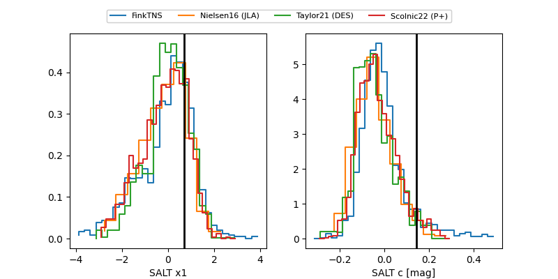

FINK: ZTF25abodfew
Lasair: ZTF25abodfew
ALeRCE: ZTF25abodfew
ZTF25abodfew (ztf,fink)
equatorial (ra, dec) = (326.9140,-27.90598)
galactic (l, b) = (20.8162,-49.49029)

last atlasc=19.05, atlaso=19.07, ztfg=19.72, ztfr=19.33
3 atlasc, 1 atlaso, 3 ztfg, 7 ztfr detections